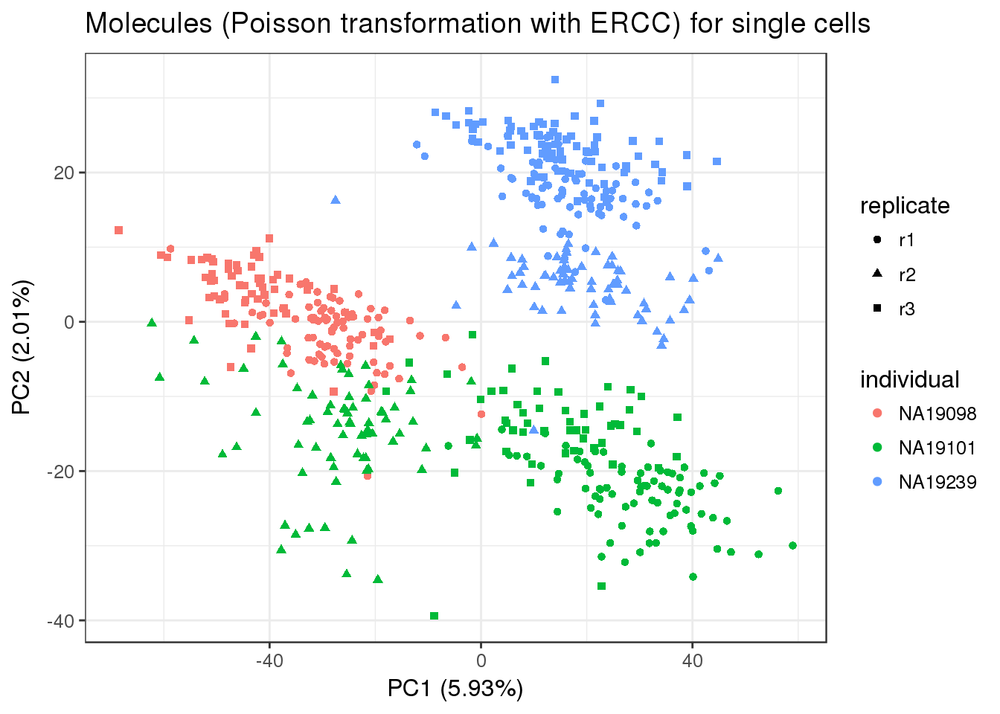
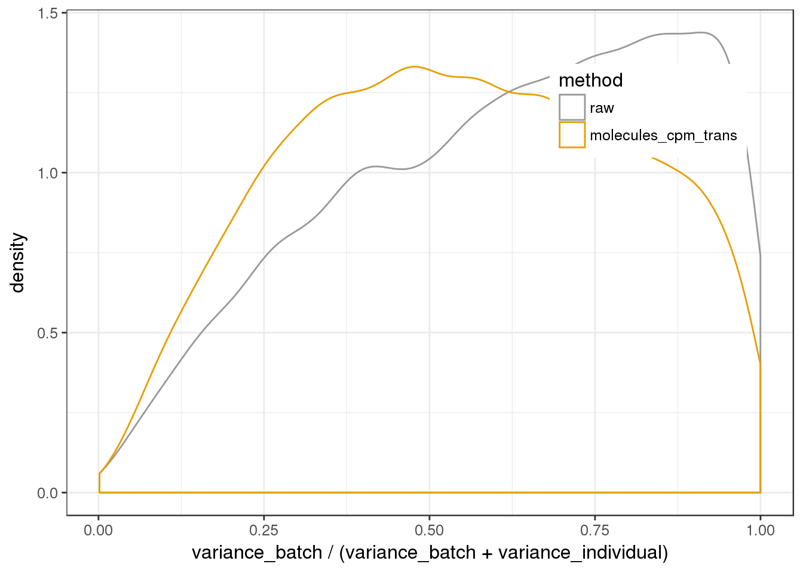
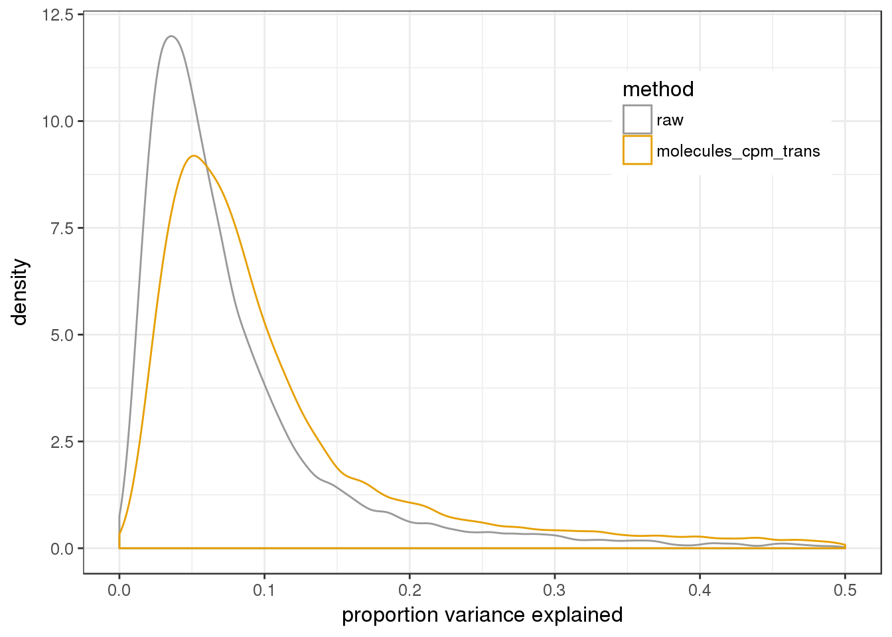

Last updated: 2017-03-06
Code version: f3c5dc0
library("dplyr")
library("doMC")Loading required package: foreachforeach: simple, scalable parallel programming from Revolution Analytics
Use Revolution R for scalability, fault tolerance and more.
http://www.revolutionanalytics.comLoading required package: iteratorsregisterDoMC(7)
library("ggplot2")
theme_set(theme_bw(base_size = 12))
source("../../singleCellSeq/analysis/functions.R")This file transforms the standardizes molecule counts by modeling the ERCC counts using a Poisson generalized linear model (glm).
Creates the following file and writes it to data directory in this github repo:
Input filtered annotation.
anno_filter <- read.table("../data/annotation-filter.txt", header = TRUE,
stringsAsFactors = FALSE)
head(anno_filter) individual replicate well batch sample_id
1 NA19098 r1 A01 NA19098.r1 NA19098.r1.A01
2 NA19098 r1 A02 NA19098.r1 NA19098.r1.A02
3 NA19098 r1 A04 NA19098.r1 NA19098.r1.A04
4 NA19098 r1 A05 NA19098.r1 NA19098.r1.A05
5 NA19098 r1 A06 NA19098.r1 NA19098.r1.A06
6 NA19098 r1 A07 NA19098.r1 NA19098.r1.A07Input filtered molecule counts.
molecules_filter <- read.table("../data/molecules-filter.txt", header = TRUE,
stringsAsFactors = FALSE)
stopifnot(ncol(molecules_filter) == nrow(anno_filter),
colnames(molecules_filter) == anno_filter$sample_id)Input standardized molecule counts.
molecules_cpm <- read.table("../data/molecules-cpm.txt", header = TRUE,
stringsAsFactors = FALSE)
stopifnot(ncol(molecules_cpm) == nrow(anno_filter),
colnames(molecules_cpm) == anno_filter$sample_id)Input exprected ERCC molecule counts (found in capture efficiency analysis). Filter to only include those ERCC controls that passed the expression filter from the filter low quality genes and cells analysis.
spike <- read.table("../../singleCellSeq/data/expected-ercc-molecules.txt", header = TRUE,
sep = "\t", stringsAsFactors = FALSE)
spike_input <- spike$ercc_molecules_well[spike$id %in% rownames(molecules_filter)]
names(spike_input) <- spike$id[spike$id %in% rownames(molecules_filter)]
spike_input <- spike_input[order(names(spike_input))]
stopifnot(names(spike_input) == grep("ERCC", rownames(molecules_filter), value = TRUE))
#names() gets or sets names of an object #use lapply when you want a list back
pois_glm_params <- lapply(1:3,function(g) numeric(ncol(molecules_cpm)))
names(pois_glm_params) = c("intercept","nu","theta")
for (i in 1:ncol(molecules_cpm)) {
#run glm model on a cell (564)
fit <- glm(molecules_filter[names(spike_input), i] ~ log(spike_input), family="poisson")
pois_glm_params$intercept[i] <- fit$coefficients[1]
pois_glm_params$nu[i] <- fit$coefficients[2]
}
#subtract intercepy divide by nu
molecules_cpm_trans <- sweep( sweep( molecules_cpm, 2, pois_glm_params$intercept, "-"), 2,pois_glm_params$nu, "/" )
#sweep- return an array obtained from input arrray by sweeping out a summary statWrite to file:
write.table(round(molecules_cpm_trans, digits = 6), "../data/molecules-cpm-trans.txt", quote = FALSE,
sep = "\t", col.names = NA)pca_molecules_cpm_trans <- run_pca(molecules_cpm_trans)
pca_molecules_cpm_trans_plot <- plot_pca(pca_molecules_cpm_trans$PCs, explained = pca_molecules_cpm_trans$explained,
metadata = anno_filter, color = "individual",
shape = "replicate") +
labs(title = "Molecules (Poisson transformation with ERCC) for single cells")
pca_molecules_cpm_trans_plot This did a linear transformation for all of the genes in one cell according to the nu and intercept from the glm model. 92 total ERCC genes.
Collect together all the normalized expression matrices for analysis
cpm_mats <- list(raw=molecules_cpm, molecules_cpm_trans=molecules_cpm_trans)We need a nested ANOVA since the replicates are not common across all individuals.
my_nested_anova=function(temp) {
global_mean=mean(temp$y)
ind_means=temp %>% group_by(individual) %>% summarize(m=mean(y)) %>% as.data.frame
rownames(ind_means) = ind_means$individual
temp$ind_means=ind_means[ temp$individual, "m" ]
batch_means=temp %>% group_by(batch) %>% summarise(m=mean(y)) %>% as.data.frame
rownames(batch_means) = batch_means$batch
temp$batch_means=batch_means[ temp$batch, "m" ]
c(ssa=sum( (temp$ind_means - global_mean)^2 ),
ssb=sum( (temp$batch_means - temp$ind_means)^2 ),
sse=sum( (temp$y - temp$batch_means)^2 ),
sst=sum( (temp$y - global_mean)^2 ))
}Run ANOVAs per gene for each matrix and calculate variance components.
anovas <- lapply(cpm_mats, function(x) {
foreach(i=1:nrow(x)) %dopar% my_nested_anova(data.frame(y=as.numeric(x[i,]), batch=anno_filter$batch, individual=anno_filter$individual))
})
variance_components <- lapply( as.list(names(anovas)), function(name) {
ss=do.call(rbind,anovas[[name]])[,1:3]
colnames(ss)=c("individual","batch","residual")
data.frame(sweep(ss,1,rowSums(ss),"/"), method=name)
} )
names(variance_components)=names(cpm_mats)
batch_over_explained <- lapply( as.list(names(anovas)), function(name) {
ss=do.call(rbind,anovas[[name]])[,1:2]
colnames(ss)=c("individual","batch")
data.frame( prop_batch=ss[,"batch"] / rowSums(ss), method=name)
} )
names(batch_over_explained) = names(cpm_mats)Plot proportions explained by batch vs. individual
cbPalette <- c("#999999", "#E69F00", "#56B4E9", "#009E73", "#F0E442", "#0072B2", "#D55E00", "#CC79A7")
ggplot( do.call(rbind,batch_over_explained), aes(prop_batch,col=method)) + geom_density(alpha=0.2, position="identity") + xlab("variance_batch / (variance_batch + variance_individual)") + theme(legend.position=c(.8,.8)) + scale_colour_manual(values=cbPalette)+ scale_fill_manual(values=cbPalette)
Shows that the transformation has normalized the variance. The plot is less squed toward batch vairance.
ggplot( do.call(rbind,variance_components), aes(1-residual,col=method)) + geom_density() + xlab("proportion variance explained") + xlim(0,.5)+ scale_colour_manual(values=cbPalette) + theme(legend.position=c(.8,.8))Warning: Removed 204 rows containing non-finite values (stat_density). What does this plot tell me?
difference among group means
partition observed variance into components of attributed to difference sources of variation
Calculate mean of means and SST ((each point - grand mean)^2)
sessionInfo()R version 3.3.2 (2016-10-31)
Platform: x86_64-redhat-linux-gnu (64-bit)
Running under: Scientific Linux 7.2 (Nitrogen)
locale:
[1] LC_CTYPE=en_US.UTF-8 LC_NUMERIC=C
[3] LC_TIME=en_US.UTF-8 LC_COLLATE=en_US.UTF-8
[5] LC_MONETARY=en_US.UTF-8 LC_MESSAGES=en_US.UTF-8
[7] LC_PAPER=en_US.UTF-8 LC_NAME=C
[9] LC_ADDRESS=C LC_TELEPHONE=C
[11] LC_MEASUREMENT=en_US.UTF-8 LC_IDENTIFICATION=C
attached base packages:
[1] parallel stats4 grid stats graphics grDevices utils
[8] datasets methods base
other attached packages:
[1] doMC_1.3.4 iterators_1.0.8 foreach_1.4.3
[4] tidyr_0.6.1 mygene_1.10.0 GenomicFeatures_1.26.3
[7] GenomicRanges_1.26.3 GenomeInfoDb_1.10.3 broman_0.65-1
[10] gplots_3.0.1 matrixStats_0.51.0 MASS_7.3-45
[13] gridExtra_2.2.1 lme4_1.1-12 workflowr_0.4.0
[16] org.Hs.eg.db_3.4.0 GOstats_2.40.0 graph_1.52.0
[19] Category_2.40.0 Matrix_1.2-7.1 GO.db_3.4.0
[22] AnnotationDbi_1.36.2 IRanges_2.8.1 S4Vectors_0.12.1
[25] Biobase_2.34.0 BiocGenerics_0.20.0 Humanzee_0.1.0
[28] sva_3.22.0 genefilter_1.56.0 mgcv_1.8-15
[31] nlme_3.1-128 BiocInstaller_1.24.0 scales_0.4.1
[34] VennDiagram_1.6.17 futile.logger_1.4.3 edgeR_3.16.5
[37] limma_3.30.11 dplyr_0.5.0 testit_0.6
[40] data.table_1.10.4 biomaRt_2.30.0 cowplot_0.7.0
[43] stringr_1.2.0 reshape2_1.4.2 rmarkdown_1.3
[46] Citrus_0.99 easyGgplot2_1.0.0.9000 ggplot2_2.2.1
loaded via a namespace (and not attached):
[1] minqa_1.2.4 colorspace_1.3-2
[3] rprojroot_1.2 htmlTable_1.9
[5] XVector_0.14.0 base64enc_0.1-3
[7] rstudioapi_0.6 sqldf_0.4-10
[9] codetools_0.2-15 splines_3.3.2
[11] knitr_1.15.1 Formula_1.2-1
[13] jsonlite_1.3 nloptr_1.0.4
[15] Rsamtools_1.26.1 annotate_1.52.1
[17] cluster_2.0.5 compiler_3.3.2
[19] httr_1.2.1 backports_1.0.5
[21] assertthat_0.1 lazyeval_0.2.0
[23] acepack_1.4.1 htmltools_0.3.5
[25] tools_3.3.2 gtable_0.2.0
[27] Rcpp_0.12.9 Biostrings_2.42.1
[29] gdata_2.17.0 rtracklayer_1.34.2
[31] proto_1.0.0 gtools_3.5.0
[33] devtools_1.12.0 statmod_1.4.29
[35] XML_3.98-1.5 zlibbioc_1.20.0
[37] SummarizedExperiment_1.4.0 RBGL_1.50.0
[39] lambda.r_1.1.9 RColorBrewer_1.1-2
[41] yaml_2.1.14 curl_2.3
[43] memoise_1.0.0 rpart_4.1-10
[45] latticeExtra_0.6-28 stringi_1.1.2
[47] RSQLite_1.1-2 checkmate_1.8.2
[49] caTools_1.17.1 BiocParallel_1.8.1
[51] chron_2.3-50 bitops_1.0-6
[53] evaluate_0.10 lattice_0.20-34
[55] htmlwidgets_0.8 GenomicAlignments_1.10.0
[57] labeling_0.3 GSEABase_1.36.0
[59] AnnotationForge_1.16.1 plyr_1.8.4
[61] magrittr_1.5 R6_2.2.0
[63] Hmisc_4.0-2 DBI_0.5-1
[65] gsubfn_0.6-6 foreign_0.8-67
[67] withr_1.0.2 survival_2.40-1
[69] RCurl_1.95-4.8 nnet_7.3-12
[71] tibble_1.2 futile.options_1.0.0
[73] KernSmooth_2.23-15 locfit_1.5-9.1
[75] git2r_0.18.0 digest_0.6.12
[77] xtable_1.8-2 munsell_0.4.3 This site was created with R Markdown